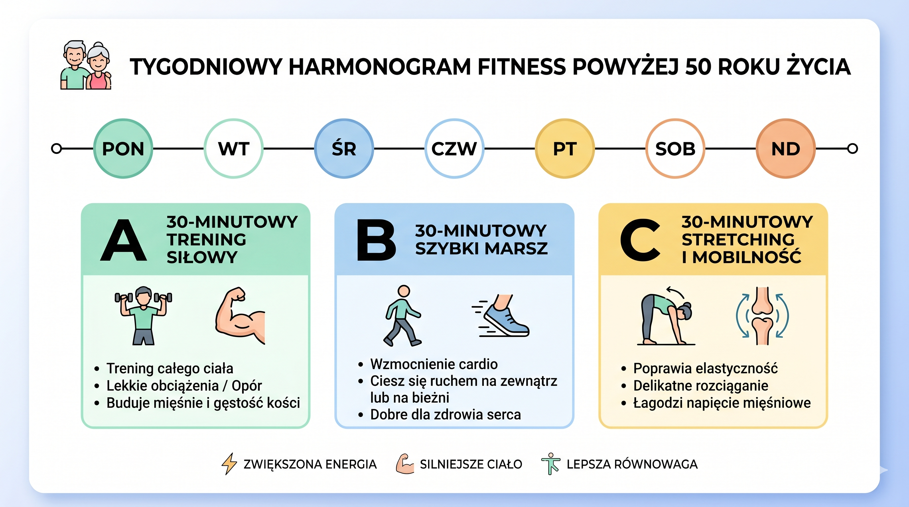
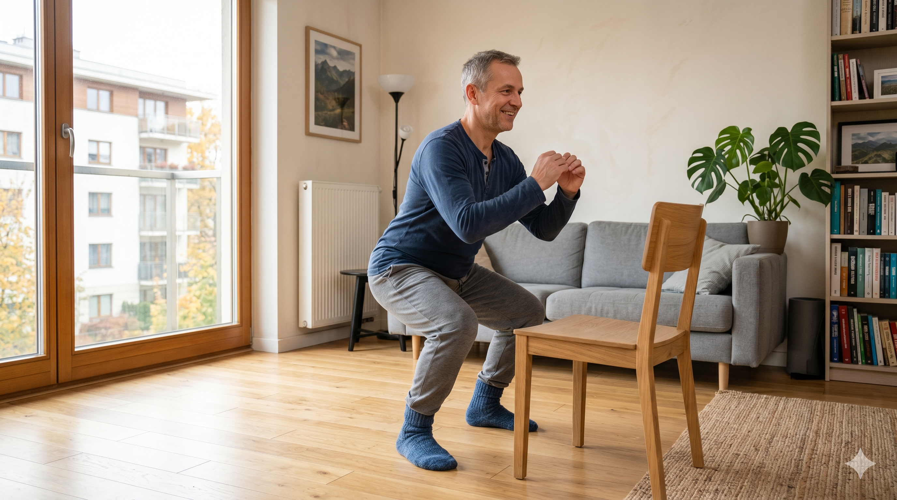
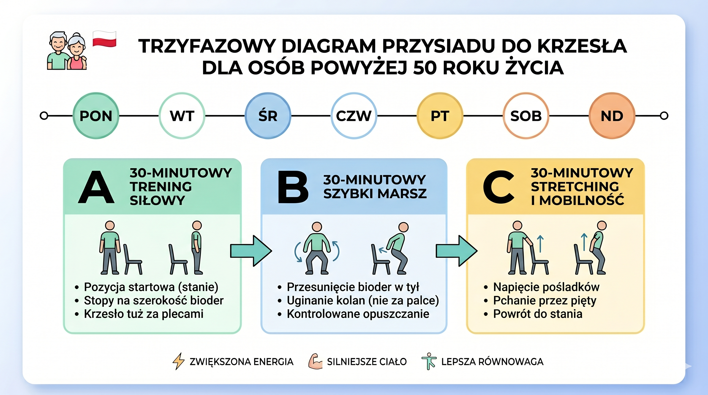
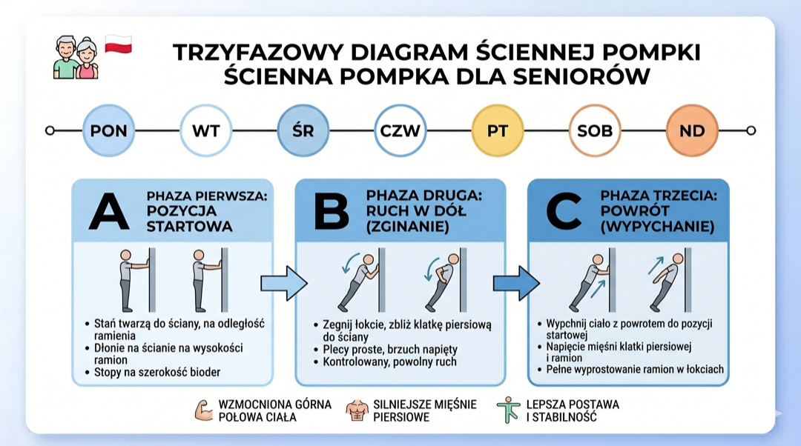
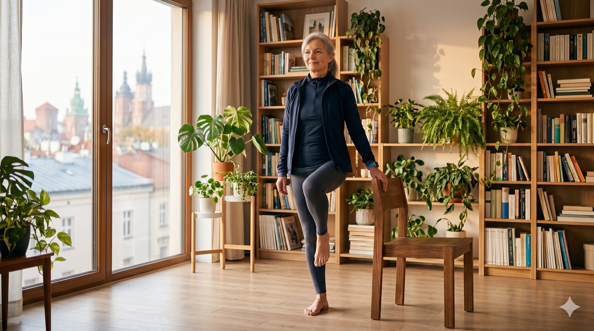
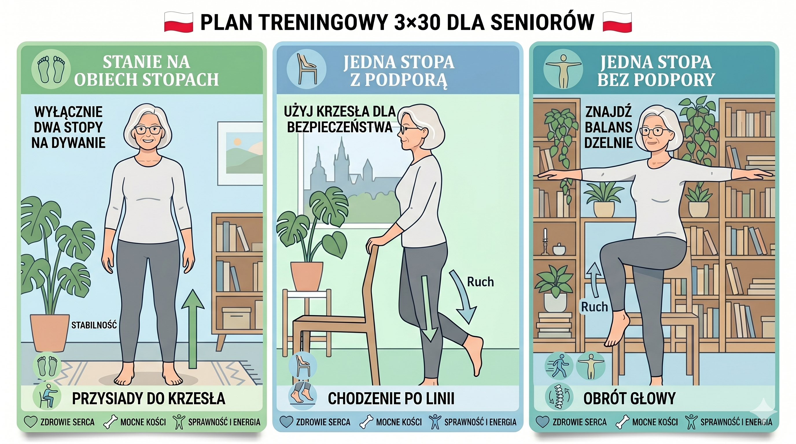
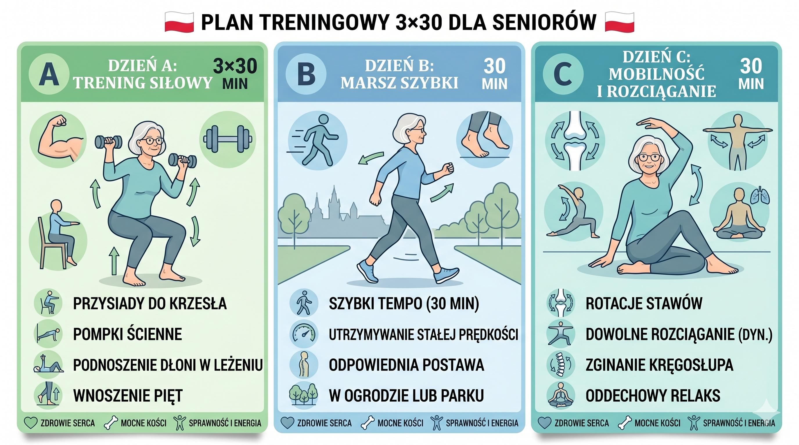

Nie potrzebujesz siłowni pięć razy w tygodniu, drogiego sprzętu ani żelaznej motywacji. Wystarczą trzy razy po 30 minut tygodniowo, mądrze ułożone pod ciało po pięćdziesiątce. Ten plan jest po to, żebyś naprawdę go zrobił – nie tylko przeczytał.
To jest plan dla normalnego życia, nie dla sportowców. Jeśli chcesz rozszerzyć temat, zajrzyj też do poradnika startu na siłowni po 50-tce. Nie musisz robić wszystkiego naraz.
Dlaczego 3×30 działa po pięćdziesiątce
Jeśli ostatnio ćwiczyłeś dawno temu albo w ogóle nie miałeś z ruchem po drodze, wizja codziennych treningów brzmi jak science fiction. Trzy krótkie sesje po 30 minut to coś, co da się wcisnąć między pracę, rodzinę i normalne życie.
Największe organizacje zdrowotne świata mówią dziś wprost: około 150 minut umiarkowanej aktywności tygodniowo plus ćwiczenia wzmacniające dwa razy w tygodniu wyraźnie zmniejszają ryzyko chorób serca, cukrzycy typu 2, depresji i problemów z pamięcią po pięćdziesiątce.
Dobra wiadomość jest taka, że nie musisz od razu robić pełnych 150 minut. Trzy razy po 30 minut to już 90 minut – świetny start, który możesz potem spokojnie rozbudowywać, np. przechodząc później do 30-dniowego planu pierwszych treningów. Ważniejsze od ideału jest to, żebyś faktycznie wyszedł z domu i zaczął się ruszać.
Ten plan 3×30 łączy trzy filary: siłę (żebyś mógł dźwigać zakupy i wchodzić po schodach bez zadyszki), serce i płuca (żeby starczało Ci tchu w życiu codziennym) oraz ruchomość i równowagę (żeby ciało nie sztywniało i nie łapało kontuzji przy byle potknięciu).
Pięć prostych zasad zanim zaczniesz
Zanim wejdziesz w konkretny plan, ustalmy kilka prostych zasad. Bez nich nawet najlepszy rozpisany trening nie zadziała.
Po pierwsze: umawiasz się sam ze sobą na konkretne dni i godziny. W tym planie proponujemy poniedziałek, środę i piątek, ale możesz wybrać inne trzy dni – ważne, żeby między sesjami był przynajmniej jeden dzień przerwy.
Po drugie: trzymasz się zasady "trochę zmęczony, ale wciąż w kontroli". Jeśli na końcu ćwiczenia masz wrażenie, że mógłbyś zrobić jeszcze dwa–trzy spokojne powtórzenia, to jest to dobre obciążenie dla ciała po pięćdziesiątce.
Po trzecie: każdy trening zaczynasz od 5 minut rozgrzewki (spokojny marsz, krążenia ramion, kilka prostych skłonów) i kończysz 5 minutami wyciszenia i rozciągania. To proste rzeczy, ale robią ogromną różnicę dla stawów i poczucia "lekkości" następnego dnia.
Po czwarte: nie gonisz za bólem mięśni następnego dnia. To, że coś nie boli, nie znaczy, że trening był "za słaby". Po pięćdziesiątce gramy w długą grę – ciało ma być silniejsze, a nie zajechane, dlatego warto znać też najczęstsze błędy po 50-tce.
Po piąte: ruch ma się zmieścić w Twoim prawdziwym życiu. Możesz ćwiczyć w domu, na dworze albo na siłowni. Ten plan w wersji podstawowej zakłada, że nie potrzebujesz żadnego specjalistycznego sprzętu.
Jak wygląda tydzień w planie 3×30
Plan jest prosty: trzy różne trzydziestominutowe sesje, które powtarzasz co tydzień. Dwie z nich wzmacniają głównie mięśnie, jedna poprawia wydolność i ruchomość.
Dzień A – siła całego ciała z ciężarem własnym. Dzień B – szybki marsz lub inna prosta forma cardio. Dzień C – mieszanka lekkiej siły, równowagi i rozciągania.
Między dniami treningowymi masz zawsze co najmniej jeden dzień przerwy. W dni wolne jesteś mile widziany na spacerze, ale bez presji – to dodatki, nie obowiązek.
Za chwilę przejdziemy przez każdy dzień osobno. Jeśli brzmi to skomplikowanie, spokojnie – na końcu znajdziesz prostą tabelę, która podsumuje wszystko jednym rzutem oka.

Dzień A – siła całego ciała (30 minut)
Dzień A możesz zrobić w domu, jeśli masz kawałek podłogi i stabilne krzesło. Całość zamyka się w pół godziny, razem z rozgrzewką i rozciąganiem.
Rozgrzewka (5 minut): spokojny marsz w miejscu albo po mieszkaniu, krążenia ramion, delikatne skłony w przód i na boki, kilka obrotów bioder.
Ćwiczenie 1 – przysiad do krzesła: usiądź i wstań z krzesła 10–12 razy, ręce możesz trzymać przed sobą dla równowagi. Staraj się nie walić się na siedzisko, tylko powoli siadać i wstawać. Zrób 2–3 serie z minutą przerwy.
Ćwiczenie 2 – pompki przy ścianie lub blacie: oprzyj dłonie o ścianę albo o stabilny blat, odsuń stopy tak, żeby ciało było lekko pochylone i zgiń ręce, przybliżając klatkę piersiową do oparcia. Wróć do pozycji wyjściowej. 2–3 serie po 8–12 powtórzeń.
Ćwiczenie 3 – wiosłowanie z butelkami wody: stań prosto, lekko ugnij kolana, pochyl się delikatnie do przodu i przyciągaj butelki z wody w stronę bioder. Plecy trzymaj w miarę prosto, ruch ma być spokojny. 2–3 serie po 10–12 powtórzeń.
Ćwiczenie 4 – unoszenie bioder w leżeniu: połóż się na plecach, ugnij kolana, stopy na podłodze. Unieś biodra tak, żeby ciało tworzyło linię od kolan do barków, przytrzymaj chwilę i opuść. 2–3 serie po 10–12 powtórzeń.
Ćwiczenie 5 – plank na kolanach: podeprzyj się na przedramionach i kolanach, ciało w jednej linii od głowy do kolan, brzuch lekko napięty. Zaczynasz od 15–20 sekund, 2–3 serie z minutą przerwy.
Na koniec 5 minut spokojnego rozciągania nóg, bioder, pleców i ramion. Nie szarpiesz, tylko wchodzisz w delikatne rozciągnięcie i oddychasz.



Dzień B – marsz dla serca (30 minut)
Dzień B to ukłon w stronę Twojego serca, płuc i głowy. Najprostsza wersja to szybki marsz – taki, przy którym oddech przyspiesza, ale nadal możesz rozmawiać pełnymi zdaniami.
Rozgrzewka (5 minut): zaczynasz spokojniej, zwykły marsz, po kilkuset metrach delikatnie przyspieszasz.
Część główna (20 minut): idziesz w tempie, które jest dla Ciebie wyraźnie szybsze niż zwykły spacer, ale nadal komfortowe. Nie musisz biegać. Jeśli wolisz, zamiast marszu możesz wybrać rower stacjonarny, pływanie lub nordic walking, a jeśli trenujesz cardio głównie w klubie, zobacz też materiał dlaczego sama bieżnia to za mało.
Wyciszenie (5 minut): zwalniasz krok, wracasz do bardziej spokojnego tempa, możesz dodać kilka prostych skłonów i rozciągnięć nóg po zatrzymaniu.
Jeśli chcesz, możesz wprowadzić prostą zabawę tempem: 1 minuta trochę szybciej, 2 minuty wolniej, powtarzane kilka razy. Zmiana rytmu sprawia, że trening jest ciekawszy i lepiej pobudza układ krążenia.
Dzień C – równowaga, ruchomość i lekka siła (30 minut)
Dzień C to mieszanka lekkich ćwiczeń, które pomagają zachować płynność ruchu, poprawiają równowagę i delikatnie wzmacniają mięśnie. To świetny kontrapunkt dla bardziej "roboczego" dnia A.
Rozgrzewka (5 minut): spokojny marsz po mieszkaniu, krążenia ramion, nadgarstków i stawów skokowych.
Ćwiczenie 1 – stanie na jednej nodze przy oparciu: stań blisko ściany lub oparcia krzesła, unieś jedną nogę kilka centymetrów nad ziemię i próbuj utrzymać równowagę 20–30 sekund. Zmieniasz nogę, 2–3 serie na stronę.
Ćwiczenie 2 – wykrok w tył z podparciem: trzymając się oparcia krzesła, zrób spokojny krok w tył jedną nogą, ugnij lekko kolana i wróć. 8–10 powtórzeń na każdą nogę, 2 serie. Ruch kontrolowany, bez pośpiechu.
Ćwiczenie 3 – otwieranie klatki piersiowej przy ścianie: oprzyj dłoń o futrynę lub ścianę na wysokości barku i delikatnie skręć się tułowiem w przeciwną stronę, czując lekkie rozciągnięcie przodu ramienia i klatki. Kilkanaście sekund na stronę, 2–3 powtórzenia.
Ćwiczenie 4 – kot–krowa dla kręgosłupa: klęk podparty na macie lub dywanie, na przemian zaokrąglasz plecy jak kot i delikatnie je zapadasz jak krowa. 10–12 spokojnych powtórzeń, skup się na oddechu.
Ćwiczenie 5 – siedzący skłon do stóp: usiądź na krześle, wyprostuj jedną nogę przed sobą, stopa w górę. Pochyl się delikatnie do przodu, aż poczujesz rozciąganie tyłu uda, przytrzymaj 15–20 sekund, zmień nogę. 2–3 serie.
Cały dzień C powinien zostawić wrażenie "poluzowania" i lekkości w ciele, a nie zmęczenia.


Kiedy dokładać i jak wiedzieć, że idziesz do przodu
Najprostszy sposób sprawdzania postępów po pięćdziesiątce nie polega na tym, ile ważysz, tylko co jesteś w stanie zrobić. Czy wejście na trzecie piętro męczy Cię mniej niż miesiąc temu? Czy jesteś w stanie zrobić o dwa przysiady więcej w tej samej serii?
Dobra zasada progresji jest taka: kiedy zrobisz wszystkie zaplanowane powtórzenia w ćwiczeniu i czujesz, że spokojnie dałbyś radę dołożyć 2–3 powtórzenia, następnym razem możesz lekko utrudnić sobie zadanie.
Utrudnić oznacza: w ćwiczeniach siłowych dodać jedną serię, wydłużyć plank o 5–10 sekund albo w marszu zrobić kilka minut szybciej niż dotychczas. Nie musisz robić wszystkiego naraz.
Jeśli masz gorszy dzień, śpisz słabo albo jesteś po chorobie – masz pełne prawo zrobić lżejszą wersję planu. Ciało po pięćdziesiątce bardzo lubi konsekwencję, ale nie lubi bycia zmuszanym za wszelką cenę.
Plan 3×30 jednym rzutem oka
| Dzień | Czas | Cel główny | Przykładowe ćwiczenia |
|---|---|---|---|
| A | 30 minut | Siła całego ciała | przysiad do krzesła, pompki przy ścianie, wiosłowanie z butelkami, unoszenie bioder, plank na kolanach |
| B | 30 minut | Serce i płuca | szybki marsz, rower stacjonarny, nordic walking |
| C | 30 minut | Równowaga i ruchomość | stanie na jednej nodze, wykroki w tył z podparciem, otwieranie klatki piersiowej, kot–krowa, skłon siedzący |

Co możesz czuć po 4–6 tygodniach i co dalej
Jeśli zrobisz ten plan przez cztery–sześć tygodni, najpewniej nie zobaczysz nagle zupełnie innego człowieka w lustrze. Ale możesz poczuć coś ważniejszego: że ciało jest mniej sztywne rano, schody męczą mniej, a po całym dniu masz wciąż trochę energii na swoje sprawy.
Na poziomie fizjologii dzieje się wtedy sporo: układ nerwowy uczy się lepiej "włączać" odpowiednie mięśnie, serce i płuca pracują ekonomiczniej, a regularny ruch pomaga stabilizować poziom cukru we krwi i poprawia jakość snu.
Po tych pierwszych tygodniach możesz podjąć decyzję, co dalej. Opcje są trzy: zostać przy 3×30 i co kilka tygodni delikatnie dokładać trudności, dołożyć czwarty dzień lekkiej aktywności (np. dodatkowy spacer) albo porozmawiać z trenerem o bardziej rozbudowanym planie.
Najważniejsze jest to, że nie wracasz do punktu wyjścia. Zbudowałeś nawyk. A nawyk to coś, co pracuje dla Ciebie nawet wtedy, kiedy nie masz idealnego dnia.
Trzy razy po 30 minut, które mogą zmienić kolejne 30 lat
Trening dla osoby po pięćdziesiątce nie musi wyglądać jak przygotowania do maratonu. Ma wspierać Twoje prawdziwe życie: pracę, wyjazdy, wnuki, pasje, zwykłe zakupy.
Plan 3×30 nie jest magiczną formułą, ale jest rozsądnym, realistycznym początkiem. Trzy krótkie spotkania z samym sobą w tygodniu – to wszystko. Reszta dzieje się z czasem.
Jeśli dziś odłożysz ten tekst i wpiszesz w kalendarz trzy konkretne terminy na najbliższe dni, zrobiłeś najważniejszy krok. Resztę będziemy budować po kolei, spokojnie.
Nie musisz ćwiczyć idealnie. Musisz ćwiczyć regularnie i bezpiecznie.
Źródła
- WHO Guidelines on Physical Activity and Sedentary Behaviour, 2020.
- CDC: Physical Activity Guidelines for Older Adults.
- NHS: Physical activity guidelines for older adults.
- American College of Sports Medicine Position Stand: Progression Models in Resistance Training for Healthy Adults.
- PubMed: przeglądy systematyczne dotyczące treningu siłowego u starszych dorosłych.
Artykuł ma charakter informacyjny i edukacyjny. Jeśli masz choroby przewlekłe, dolegliwości bólowe, zawroty głowy lub jesteś po zabiegach, skonsultuj plan aktywności z lekarzem i fizjoterapeutą przed startem.